Episodes use spatial audio — we recommend listening with headphones. Videos play automatically; if your browser starts one muted, turn the sound on.
The target is resolved from the spoken utterance through correct speech recognition.
The target is resolved by interpreting the speaker’s gesture in the visual scene.
The target is resolved by detecting and localizing the corresponding device’s sound source.
The target is resolved by reasoning about the speaker’s egocentric direction.
The target is resolved by identifying the speaker and interpreting the person-specific reference.
Smart-home assistants are expected to act on natural user requests, yet existing benchmarks largely assume that the intended device is explicitly specified in text. In everyday interaction, however, people often leave this information implicit and convey it through non-verbal cues such as gestures, sounds, spatial context, or speaker identity. In this paper, we introduce OmniSmartHome, a multimodal smart-home benchmark in which agents must ground such cues to the intended device before executing the requested operation. OmniSmartHome contains 1,360 synthetic and 272 real-world episodes with visual observations and spatial audio, covering five grounding types: speech, gesture, sound, space, and user identity. We evaluate 16 recent omni-modal large language models and find a clear gap between explicit and implicit grounding. Models perform well when the target device is directly named in speech, but struggle when it must be inferred from multimodal evidence. To study whether these failures can be mitigated through agentic perception, we further propose PROME (PROcedural Memory for multimodal Evidence gathering), a lightweight framework that equips an agent with specialized audio-visual perception tools and a learned procedural memory for deciding when to invoke them and how to combine their outputs. PROME consistently improves grounding and task execution across six Omni-LLMs.
OmniSmartHome defines an episode profile along three dimensions: a grounding type, indicating which modality carries the evidence needed to resolve the intended target device; a query type, indicating what the user asks for; and a feasibility type, indicating whether the request can be fulfilled in the scene. Every episode provides a visual observation of the room where the speaker is, a first-order Ambisonics recording of the spoken request together with the sounds of active devices, and the initial home state: rooms, devices, and household members.
1,360
Synthetic episodes
272
Real-world episodes
5
Grounding types
4
Query types
2
Feasibility types
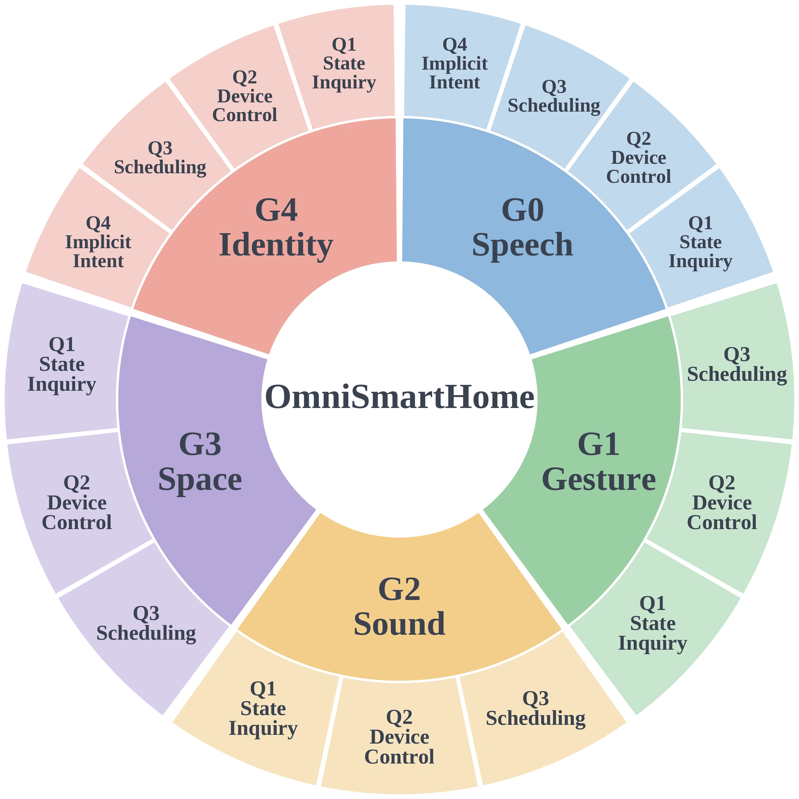
Figure 2: Taxonomy of OmniSmartHome. Each episode is characterized by a grounding type, a query type, and a feasibility type.
| G0 | Speech | The user explicitly names the target device in the spoken utterance, requiring the agent to correctly recognize the speech. |
| G1 | Gesture | The user refers to the target deictically (“turn that off”) while pointing toward it, requiring the agent to interpret the gesture and ground it in the visual scene. |
| G2 | Sound | The target is specified by the sound it emits (“stop that humming noise”), requiring the agent to detect and localize the sound source and associate it with the corresponding device. |
| G3 | Space | The target is specified relative to the speaker’s egocentric direction (“turn off the light on my left”), requiring the agent to reason about that direction from the speaker’s perspective. |
| G4 | User identity | The target depends on the identity of the speaker (“turn off the AC in my room”), requiring the agent to identify who is speaking and resolve the person-specific reference. |
Episodes use spatial audio — we recommend listening with headphones. Videos play automatically; if your browser starts one muted, turn the sound on.
One example per grounding type × query type, rendered in photorealistic homes with spatial audio.
Q1 State inquiry
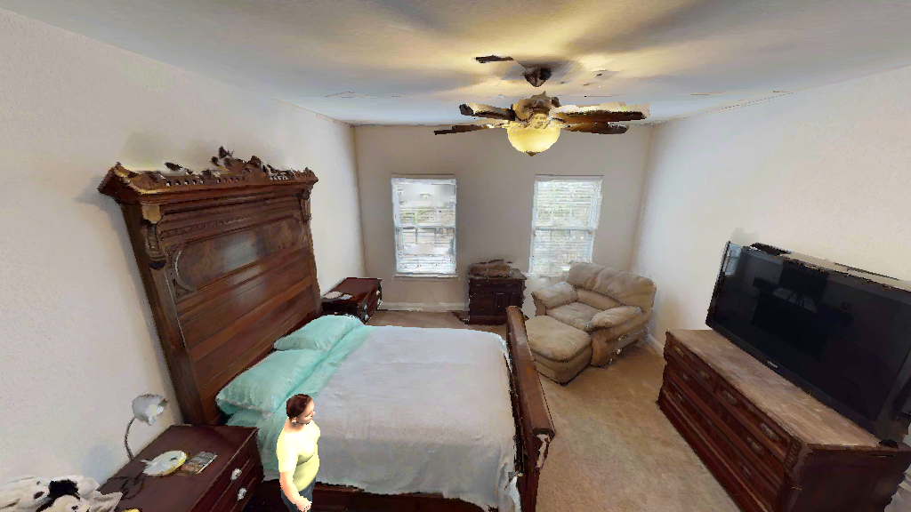
“Hey, can you tell me what the remaining time is on the tv in the living room right now?”
Target device TV
Q2 Explicit device control
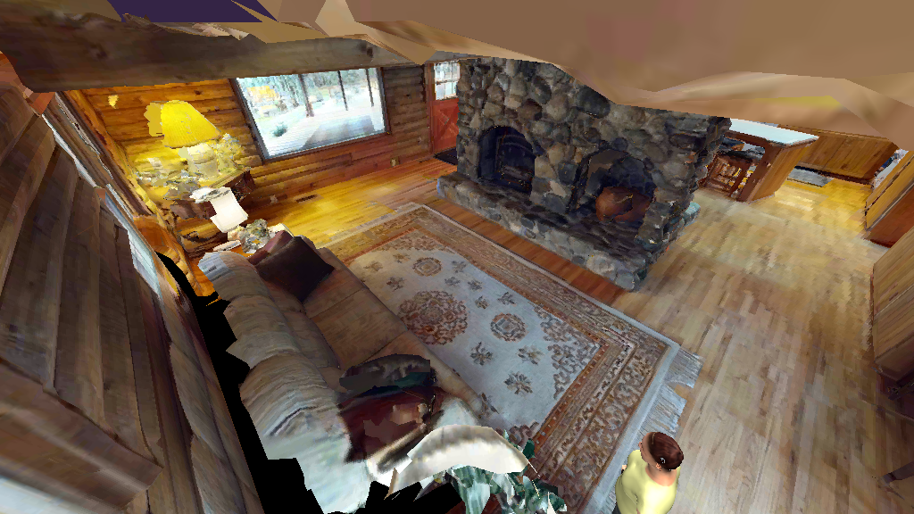
“Hey, turn on the dimmable light 1 in the living room and set its brightness to 100 percent.”
Target device Dimmable light
Q3 Workflow scheduling
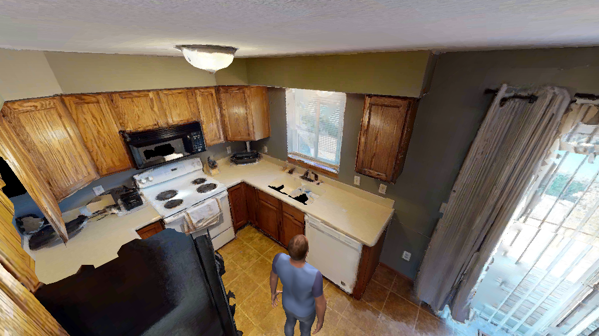
“Hey, schedule a pause for the dishwasher in the kitchen in 5 minutes, do not pause it now.”
Target device Dishwasher
Q4 Implicit intent
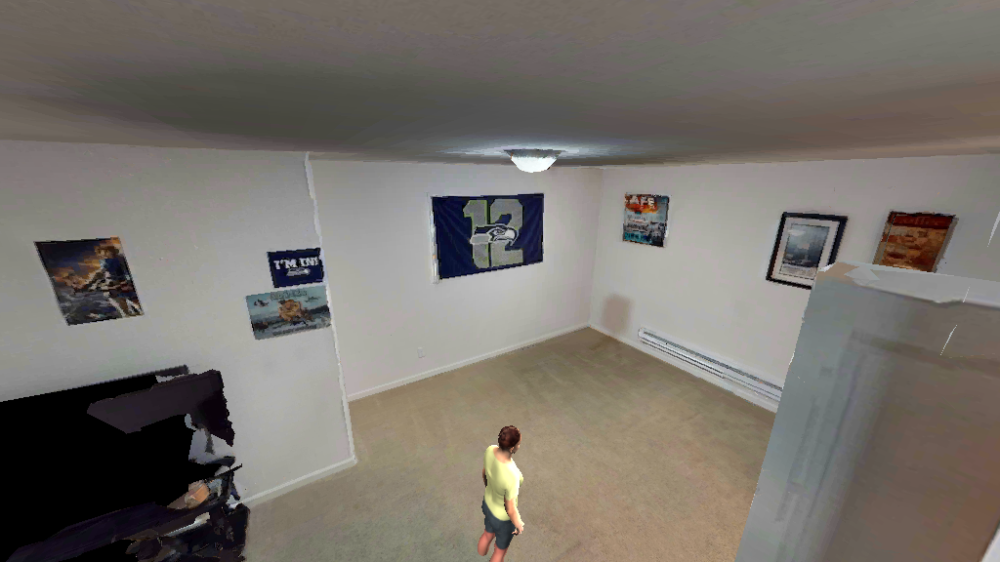
“Ugh, I am a bit too warm in the living room. My face feels flushed. I am sweating a little and getting sluggish from the heat.”
Target device Air conditioner
Q1 State inquiry
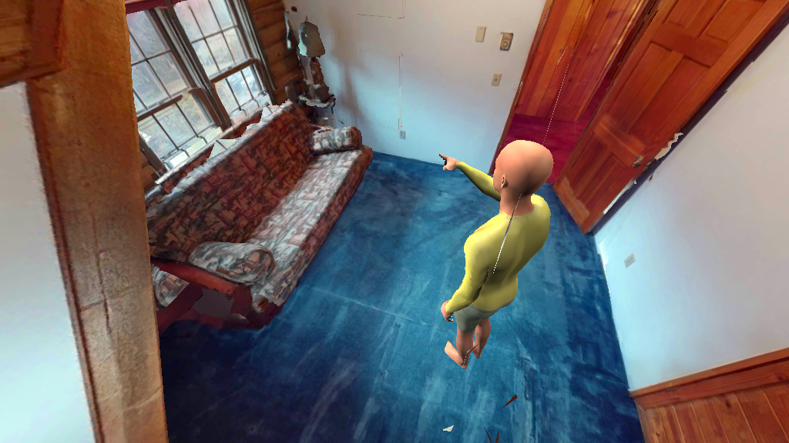
“Which operating phases does this support?”
Target device Robot vacuum
Q1 State inquiry
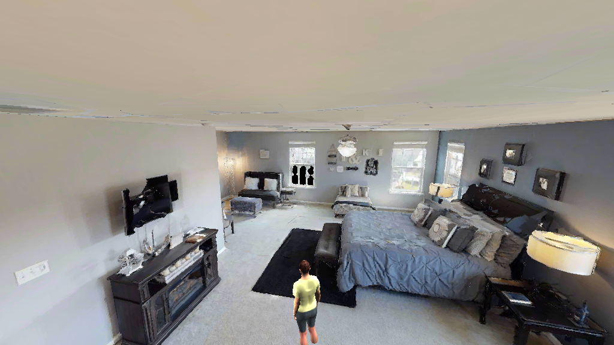
“I hear that machine noise. What is the product name of the device making that machine noise?”
Target device Dishwasher
Q2 Explicit device control
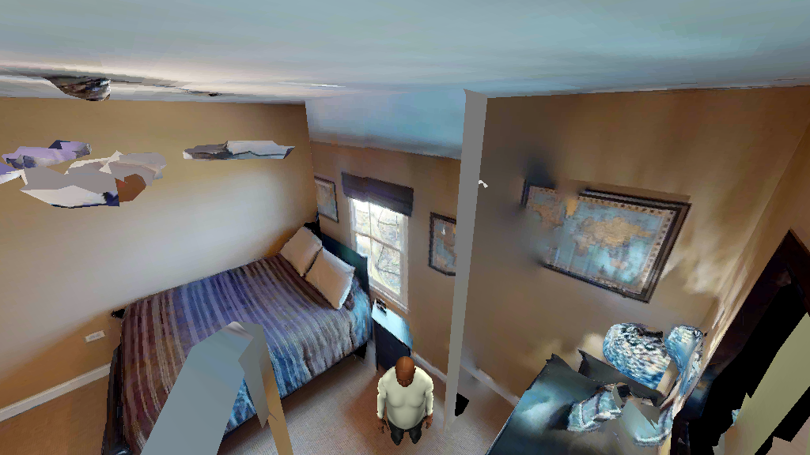
“Hey, stop that whirring sound right now.”
Target device Fan
Q3 Workflow scheduling
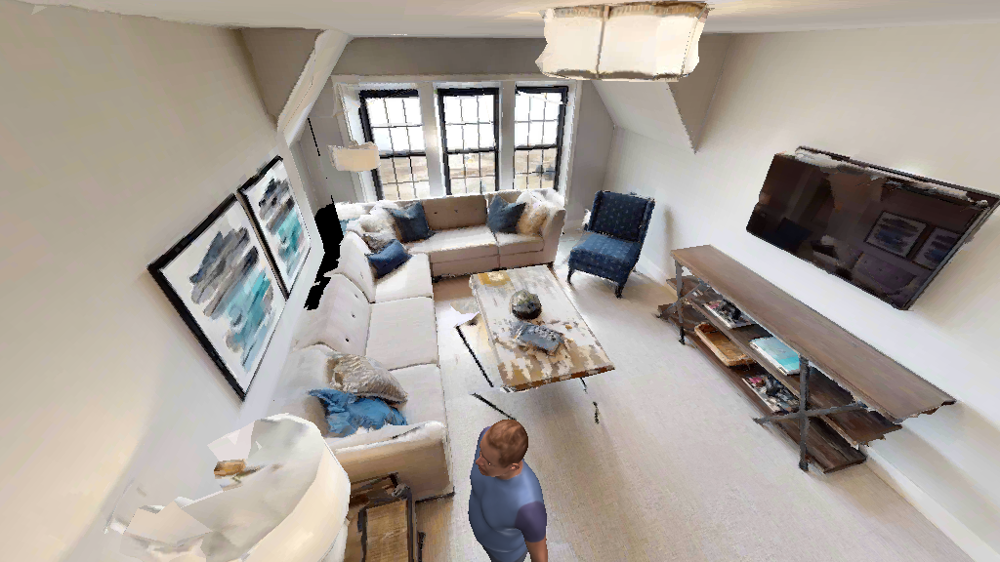
“Schedule setting the volume of that upbeat music to 70 percent in 12 minutes and do not do it now”
Target device TV
Q1 State inquiry
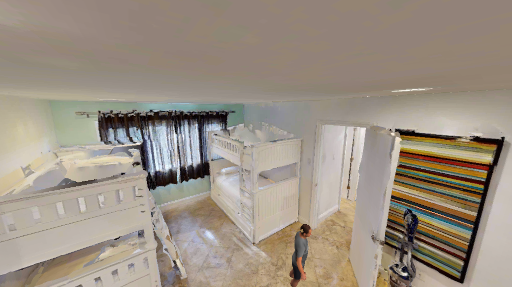
“Um, can you tell me what operational states are available for the device making that sound in front of me?”
Target device Robot vacuum
Q2 Explicit device control
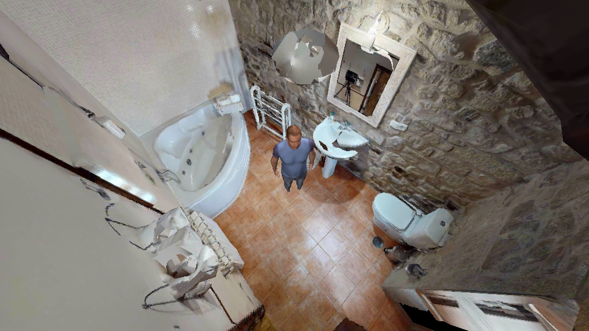
“Turn on the device above my head now.”
Target device On/off light
Q3 Workflow scheduling
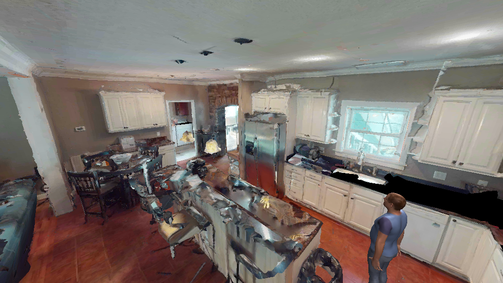
“Schedule the thing making that sound on my right to stop running in 13 minutes and do not stop it now.”
Target device Dishwasher
Q1 State inquiry
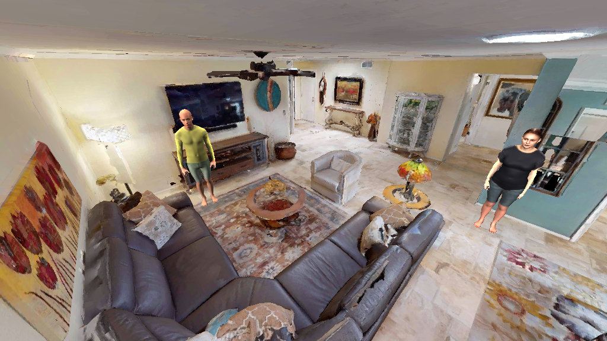
“Is the coffee machine in my room running?”
Target device Coffee machine · Grandpa's room
Q2 Explicit device control
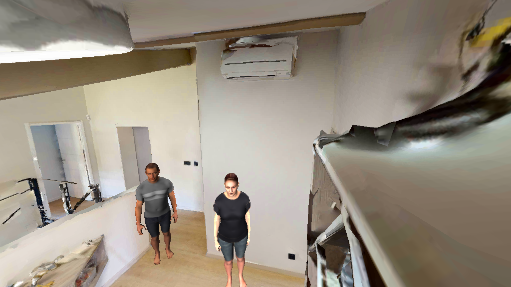
“Turn the dishwasher in my room on and start it running.”
Target device Dishwasher · Dad's room
Q3 Workflow scheduling
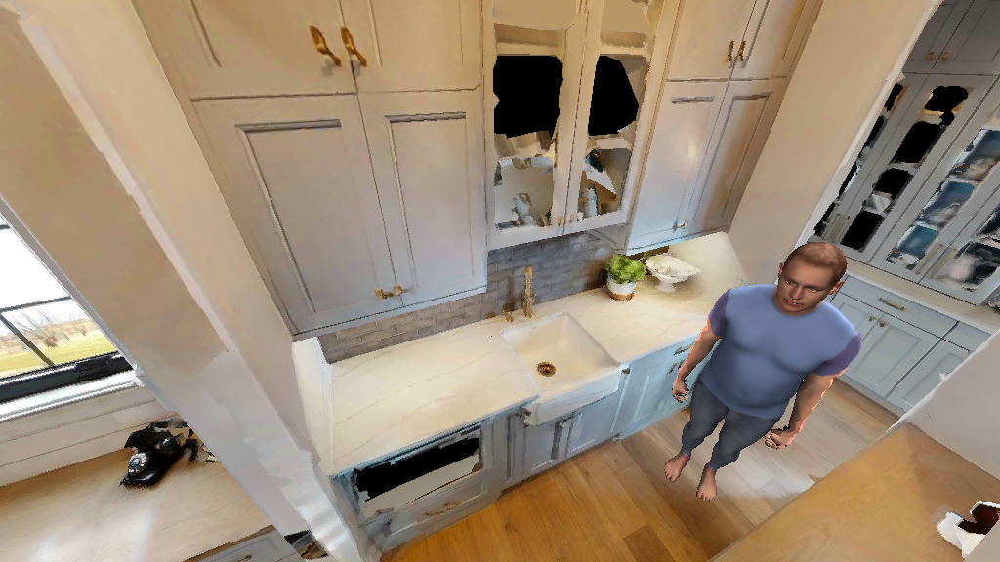
“After dinner, exactly 12 minutes after dishwasher in the bathroom finishes cleaning, power off the microwave in my room.”
Target device Microwave · Dad's room
One recorded example per grounding type, captured with a camera and a first-order Ambisonics microphone.
Q2 Explicit device control
“Hey, switch the channel of the TV in here to SBS.”
Target device TV
Q3 Workflow scheduling
“In 10 minutes, power this on.”
Target device Air purifier
Q1 State inquiry
“What’s the product name of the device making that beeping sound?”
Target device Microwave
Q1 State inquiry
“What brand makes the device in front of me?”
Target device TV
Q4 Implicit intent
“It is muggy in my room, my skin feels sticky.”
Target device Dehumidifier · Son's room
Before operating a device, an agent in OmniSmartHome must first ground which device the user is referring to. This requires actively gathering multimodal evidence and integrating it according to how the request is grounded in the environment. To support this process, we introduce PROME (PROcedural Memory for multimodal Evidence gathering), a lightweight agentic baseline for adaptive evidence acquisition. PROME equips the agent with a set of multimodal perception tools and augments its reasoning with a procedural memory that captures reusable strategies for resolving grounding ambiguities.
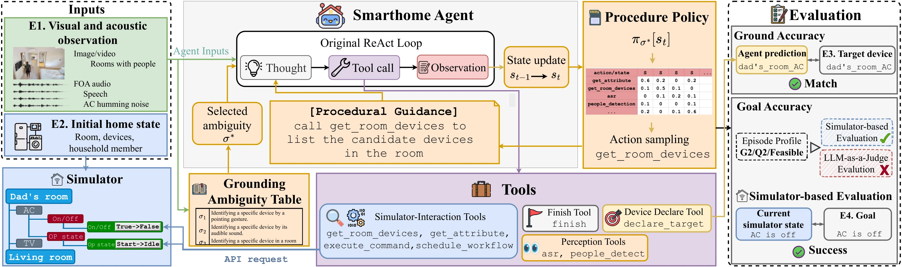
Figure 4: Illustration of the agentic framework. The baseline excludes the components highlighted in orange, while PROME incorporates them. The figure visualizes the roles and interactions of the episode components (E1–E4), simulator, tools, and evaluation.
We evaluate 16 Omni-LLMs: seven open-source models with fewer than 10B parameters, five larger open-source models, and four proprietary models. For models that do not support spatial audio input, the first-order Ambisonics recordings are downmixed to mono. PROME is applied to six of the models, each with a memory built from the 680 synthetic training episodes.
| Model | All | G0 Speech | G1 Gesture | G2 Sound | G3 Space | G4 User identity | ||||||
|---|---|---|---|---|---|---|---|---|---|---|---|---|
| Gr. | Goal | Gr. | Goal | Gr. | Goal | Gr. | Goal | Gr. | Goal | Gr. | Goal | |
| Human Level | 94.8 | 82.3 | 97.8 | 82.1 | 97.3 | 89.4 | 93.1 | 91.7 | 93.4 | 84.1 | 91.7 | 80.4 |
| Open-source Omni-LLMs (<10B) | ||||||||||||
| Video-LLaMA2 7B | 5.8 | 4.9 | 6.8 | 3.4 | 6.2 | 6.9 | 6.2 | 6.2 | 7.6 | 6.2 | 2.9 | 2.9 |
| Qwen2.5-Omni 7B | 33.0 | 17.6 | 55.5 | 25.5 | 30.9 | 19.4 | 28.1 | 14.2 | 27.2 | 17.4 | 20.3 | 10.9 |
| Spatial-Omni 7B | 20.0 | 11.5 | 39.1 | 14.1 | 14.9 | 11.5 | 16.3 | 10.4 | 16.0 | 11.8 | 10.4 | 9.4 |
| video-SALMONN2+ 7B | 27.0 | 13.7 | 48.2 | 20.6 | 20.1 | 11.8 | 23.6 | 13.5 | 24.7 | 14.9 | 15.4 | 7.6 |
| video-SALMONN-o1 7B | 24.5 | 10.2 | 44.5 | 13.5 | 24.7 | 10.4 | 17.4 | 9.4 | 25.3 | 11.8 | 9.1 | 6.5 |
| OmniVinci 9B | 17.8 | 8.8 | 31.2 | 9.9 | 9.0 | 6.9 | 14.9 | 9.7 | 17.0 | 9.7 | 13.5 | 7.6 |
| MiniCPM-o-4.5 9B | 60.6 | 30.9 | 85.2 | 51.0 | 56.9 | 29.9 | 56.6 | 26.4 | 59.4 | 32.3 | 42.7 | 14.1 |
| Large Open-source Omni-LLMs | ||||||||||||
| Gemma4 12B | 50.6 | 25.2 | 69.3 | 45.3 | 46.5 | 19.1 | 55.2 | 29.2 | 54.9 | 26.0 | 28.1 | 6.0 |
| Nemotron3-Omni 30B-A3B | 62.7 | 44.5 | 86.5 | 60.9 | 65.3 | 52.4 | 67.4 | 47.2 | 64.9 | 51.4 | 31.8 | 15.1 |
| Qwen3-Omni-Instruct 30B-A3B | 66.6 | 43.8 | 88.0 | 63.0 | 66.3 | 53.8 | 77.4 | 38.2 | 60.8 | 48.6 | 41.7 | 17.4 |
| Qwen3-Omni-Think 30B-A3B | 65.9 | 48.4 | 87.8 | 67.4 | 66.0 | 56.6 | 79.9 | 56.9 | 72.2 | 55.2 | 28.6 | 11.7 |
| MiMo-V2.5 310B-A15B | 78.4 | 60.2 | 93.5 | 73.7 | 72.2 | 63.5 | 81.9 | 60.8 | 84.7 | 69.4 | 60.7 | 37.0 |
| Proprietary Omni-LLMs | ||||||||||||
| Gemini-2.5-Flash | 73.7 | 56.2 | 94.0 | 76.8 | 69.4 | 60.1 | 74.3 | 54.9 | 78.1 | 63.2 | 52.6 | 28.6 |
| Gemini-2.5-Pro | 81.0 | 63.1 | 95.1 | 80.5 | 74.7 | 66.7 | 81.9 | 50.3 | 83.0 | 69.8 | 69.5 | 47.7 |
| Gemini-3.1-Pro (Preview) | 85.6 | 73.4 | 95.3 | 81.0 | 76.4 | 71.5 | 97.6 | 80.9 | 87.5 | 79.2 | 72.4 | 57.3 |
| Qwen3.8-Omni-Flash | 81.7 | 63.1 | 93.2 | 76.8 | 76.7 | 64.2 | 92.7 | 66.0 | 85.4 | 72.2 | 63.0 | 39.6 |
| Agent Baseline | ||||||||||||
| Qwen2.5-Omni + PROME | 38.2 | 22.4 | 61.5 | 34.6 | 41.0 | 28.1 | 35.1 | 14.2 | 28.1 | 22.9 | 22.9 | 11.7 |
| Gain | +5.2 | +4.8 | +6.0 | +9.1 | +10.1 | +8.7 | +7.0 | +0.0 | +0.9 | +5.5 | +2.6 | +0.8 |
| Gemma4 + PROME | 74.0 | 59.3 | 86.2 | 73.4 | 65.3 | 58.3 | 89.6 | 70.8 | 75.7 | 58.3 | 55.5 | 37.8 |
| Gain | +23.4 | +34.1 | +16.9 | +28.1 | +18.8 | +39.2 | +34.4 | +41.6 | +20.8 | +32.3 | +27.4 | +31.8 |
| Nemotron + PROME | 65.2 | 49.1 | 88.8 | 66.7 | 64.9 | 55.6 | 70.1 | 53.8 | 70.8 | 57.6 | 33.9 | 16.9 |
| Gain | +2.5 | +4.6 | +2.3 | +5.8 | -0.4 | +3.2 | +2.7 | +6.6 | +5.9 | +6.2 | +2.1 | +1.8 |
| Qwen3-Think + PROME | 70.2 | 53.9 | 87.5 | 69.8 | 70.1 | 58.3 | 86.5 | 68.8 | 77.1 | 62.2 | 35.4 | 17.2 |
| Gain | +4.3 | +5.5 | -0.3 | +2.4 | +4.1 | +1.7 | +6.6 | +11.9 | +4.9 | +7.0 | +6.8 | +5.5 |
| Gemini-2.5-Flash + PROME | 78.2 | 62.3 | 91.9 | 76.6 | 72.2 | 62.2 | 81.2 | 63.5 | 77.8 | 65.6 | 67.2 | 44.5 |
| Gain | +4.5 | +6.1 | -2.1 | -0.2 | +2.8 | +2.1 | +6.9 | +8.6 | -0.3 | +2.4 | +14.6 | +15.9 |
| Gemini-2.5-Pro + PROME | 85.0 | 69.2 | 96.6 | 79.4 | 74.3 | 66.3 | 86.8 | 68.4 | 87.8 | 73.6 | 78.1 | 58.3 |
| Gain | +4.0 | +6.1 | +1.5 | -1.1 | -0.4 | -0.4 | +4.9 | +18.1 | +4.8 | +3.8 | +8.6 | +10.6 |
Baselines. Small open-source models show generally low grounding accuracy across all grounding types, with MiniCPM-o-4.5 performing best in this group. Their goal accuracy is often substantially lower than their grounding accuracy, in some cases by more than a factor of two: even when these models identify the target device, they still struggle to complete the requested goal. Larger open-source models achieve higher overall accuracy with a smaller gap between grounding and goal performance. Their grounding is particularly strong on G0, where the target can be resolved from speech alone, but drops on G1–G4, which require additional multimodal evidence. Proprietary models generally outperform open-source models, yet show a similar gap between G0 and G1–G4, with particularly large drops on G4. The contrast between nearly saturated performance on G0 and lower performance on G1–G4 highlights multimodal grounding as the primary challenge of the benchmark.
PROME. PROME improves overall grounding and goal accuracy across all six backbones. Gemma4, the weakest of the larger open-source baselines, gains 23.4 and 34.1 percentage points in grounding and goal accuracy, surpassing the other open-source baselines. PROME also improves the strong Gemini models, by 4.5 / 6.1 points on Gemini-2.5-Flash and 4.0 / 6.1 points on Gemini-2.5-Pro in grounding / goal accuracy. Gains on G0 are limited, as these queries can be resolved from speech alone; G1–G4 benefit more, since they require acquiring and integrating additional multimodal evidence.